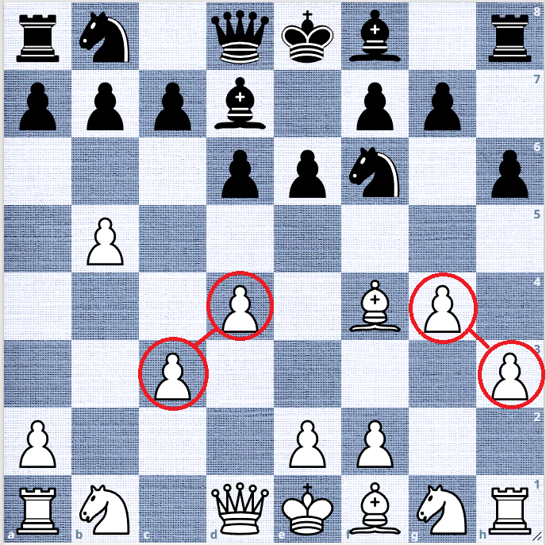
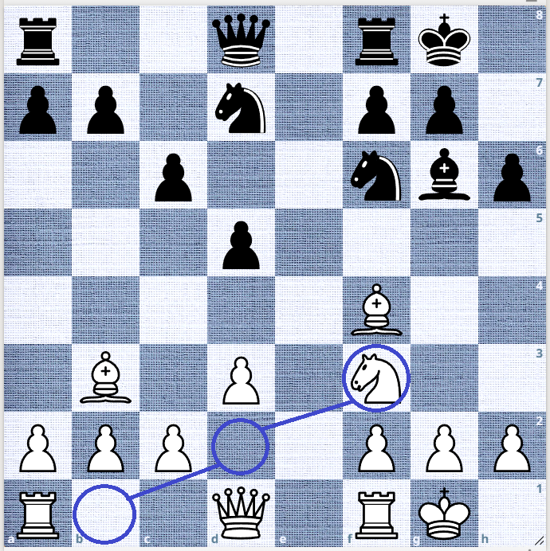
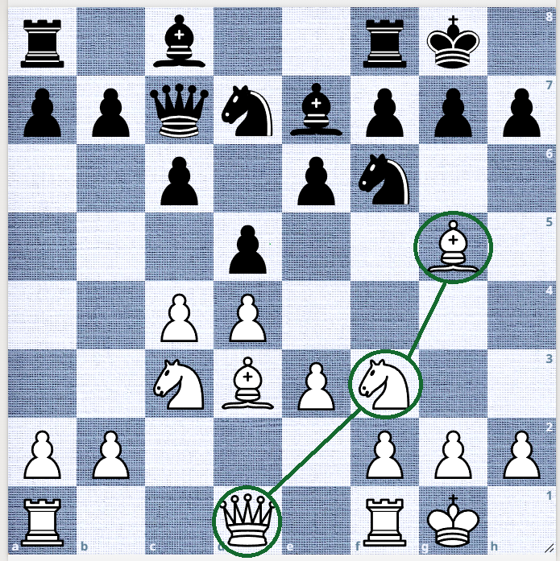

What is Graph Chess?
Traditional chess already provides many tools and concepts that help players improve their games. Graph Chess is another improvement to the traditional chess system. More precisely, it adds another layer of abstraction to the way we look at a chess position.Traditional chess is broadly classified into three areas:
- Tactics
- Positional Chess
- Game Strategy
There are also many unwritten principles that guide the player through different phases of a chess game.
Graph Chess looks at the same chess position from a different perspective. It is based on three distinct graphs that arise from the position:
- Pawn Graph (PG)
- Mobility Graph (MG)
- Coordination Graph (CG)
Graph Chess tries to go one step further. It looks at the relationships between these positional features and tries to use those relationships to understand the position and improve the decision-making process.
The Three Graphs
PG — Pawn Graph
A graph is a network of connected nodes. In chess, the nodes are the chess pieces, including pawns.
If we think of the 64 squares of a chessboard as a network of squares, then by excluding the empty squares, we get a network of pieces.
In this network, some pieces naturally connect through different relationships.
In the case of pawns, a pawn chain is one of the important structures. A Pawn Graph (PG) represents the positive relationships between pawns.
In the following diagram, h3–g4 and d4–c3 form parts of the PG.

We will leave the discussion of isolated pawns, doubled pawns and other pawn structures for later.
This abstraction provides a way to look at the health of the pawn structure from a different perspective.
Another important aspect is flexibility. The PG can be evaluated using a scoring system that takes these structural characteristics into account.
The details of the scoring system and how it is used in position analysis are developed in the book.
MG — Movement Graph
When a piece moves from its original position to its current position, the path created by its movement forms a Mobility Graph (MG).
Like a pawn chain, it can be viewed as a chain created through the path of the piece.
The MG is concerned with the current position of the piece. We are not evaluating the piece based on where it was, but on what it can do from where it is now.
Every piece except pawns has a Mobility Graph.
There are different ways to evaluate the mobility of a piece. One important question is:
How many roles does the piece play from its current position?
The more roles a piece can play, the more flexible it becomes. This flexibility can then be represented through a score.
The following diagram shows the MG of a piece.

Future positions are explored through an analysis and calculation system using Graph methods.
Graph Chess does not replace traditional chess. You can switch between the traditional and graph-based ways of looking at a position whenever you need to. The two systems are complementary rather than competitive.
CG — Coordination Graph
The Coordination Graph (CG) is created by multiple pieces from the same side. The pieces are connected through their supporting relationships, forming a chain of different pieces.
A piece in the CG has a supporting role, but it also has its own Mobility Graph (MG). This distinction is important.
In the following position, the knight on f3 supports the bishop on g5. At the same time, the knight itself is supported by the queen, creating a chain of supporting pieces.

The CG is the dedicated support system for the pieces. Its strength is related to the flexibility of the pieces in supporting one another.
An overloaded piece has limited flexibility in this supporting network.
The CG can also be affected by tactical disruptions and sacrifices. When a connection is broken, the coordination may have to be rebuilt or reorganized.
The detailed scoring and analysis of the CG are developed in the book.
The Book
Hidden Graphs of Chess
A Graph-Based Method to Learn and Play Chess
Training Positions
Practical chess positions will demonstrate the Graph Chess decision-making process.
About
Hidden Graphs of Chess is a new graph based method to understanding and playing chess using graph-based thinking.